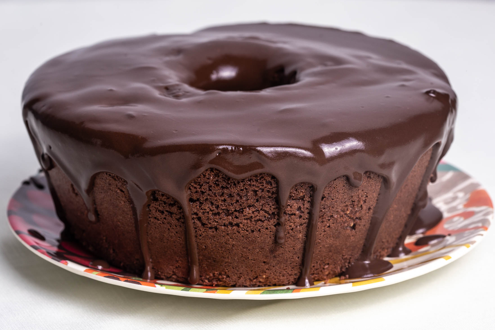

Receita de Bolo de Chocolate
Receita de bolo de chocolate com cobertura de chocolate mais delicioso que você vai comer em toda a sua vida
Ingredientes
Bolo:
- 3 xícaras de farinha de trigo
- 2 xícaras de açucar
- 1 xícara de achocolatado em pó
- 3 ovos
- 1 xícara de óleo
- 1 xícara de água fervendo
- 1 colher de fermento em pó
- Margarina(para untar)
- Farinha(para untar)
Cobertura:
- 1 caixa de leite condensado
- 1 caixa de creme de leite
- 1 colher de margarina
- 3 colheres de achocolatado em pó
Modo de preparo
- Pré-aqueça o forno a 180 graus por 20 minutos
- Misture os ingredientes secos
- Adicione os ingredientes molhados e misture
- Adicione o fermento por último
- Unte a forma com margarina e farinha e coloque a mistura na forma
- Coloque o bolo para assar por 35-40 minutos
- Enquanto o bolo assa colque numa panela os ingredientes da cobertura
- Misture em fogo baixo até chegar no ponto de cobertura
- Após assar o bolo e preparar a cobertura,desenforme o bolo e coloque a cobertura
Informações extras
- Rende ate 12 porções
- Tempo de preparo: 60 minutos
Aproveite o seu delicioso bolo (: